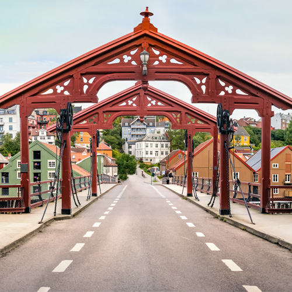
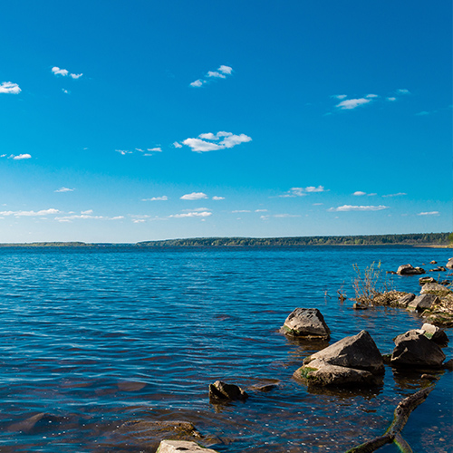
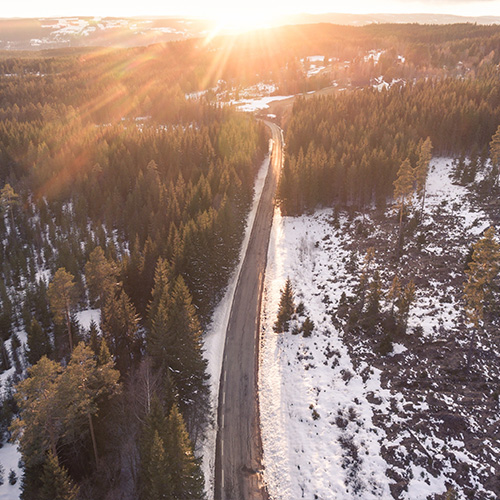

Tours
Here’s a collcetion of the tours of Trondheim and it’s surrounding areas we’re currently offering. All tours are both eco- and family-friendly!

Midtbyen
A tour in the city center of Trondheim! See the Nidaros cathedral, the Old City Birdge and more!
Length: 2.7 km
Duration: 1 hour
Cost: 250 NOK

Jonsvatnet
A tour around «Jonsvatnet», a beautiful lake right outside the city. Take in the beatiful scnery and breathe!
Length: 6 km
Duration: 3 hours
Cost: 650 NOK

Bymarka
A tour around Bymarka. We start in the city center. This is a more challenging but also rewarding tours.
Length: 18 km
Duration: 8 hours
Cost: 1200 NOK